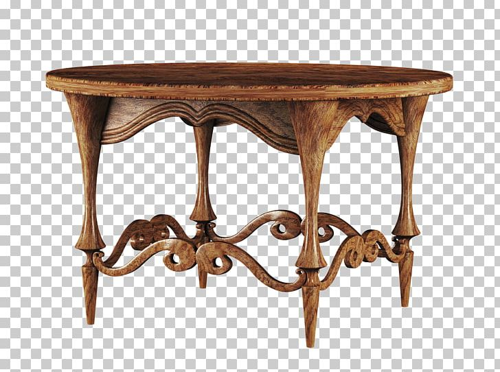
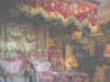

| ......fifty items.  01. Rare Welsh "Tylwyth Teg" fairy figurine 02. "Cymru Curiosities" mystery box (sealed) 03. Handcrafted miniature Welsh miner's lamp 04. Dragon-shaped hand-carved obsidian backscratcher 05. Welsh folklore-themed weather predictor ball 06. Noise-making plastic singing sheepdog figurine 07. Medieval Welsh poetry riddles scroll (unused) 08. Welsh slate rune stone carving set (unopened) 09. Tiny remote-control red dragon in flight atop a slate stand (out of batteries) 10. Spring-loaded leaping leek with a suction cup base 11. "Llymru Lollipop Delight" traditional Welsh candy, purchased in 2003 12. Snap-on Welsh dragon talisman 13. Rugby ball-shaped puzzle box with intricate Welsh knotwork 14. Welsh flag-themed measuring tape with sheep and shepherd designs, sheep on the end of the tape 15. Spy-themed sheep with covert surveillance camera 16. Glowing Welsh harp-shaped keychain (broken) 17. Deck of ancient Celtic symbol-designed playing cards in a druidic oak box 18. "Eisteddfod Enigmas" puzzle book 19. "Mythical Beasts of Wales" collector's compendium (unopened) 20. Dragon's breath-flavored lip gloss (partially used) 21. Plush sheep with magnetized feet for wall climbing 22. Welsh cake-scented lip balm (unused) 23. Bara Brith-flavored sherbet (expiration date exceeded) 24. Authentic Welsh dragon scale replica in a display case 25. Enchanted "Cyhyraeth" ghost wail recording device 26. Tom Jones holographic concert wristband 27. Miniature stone circle carving tools set (unopened) 28. "Legends of Llyn y Fan Fach" trading cards, The Lady of the Lake Edition (opened) 29. "Cryptic Cursiosities of Cymru" mystical card set (unopened) 30. Red dragon-shaped relic thimble 31. Welsh folklore-themed magic wand with hidden compartments 32. "Llygoden Llygad Y Dydd" enchanted talking mouse thermos 33. "Tales of Twm Sion Cati" interactive storytelling hat 34. Ball-point pen with metal-ball chain connected to a rare Welsh gemstone base (unopened) 35. Ancient Welsh sundial with arcane markings 36. Welsh dragon egg Pez dispenser 37. Elusive Tylwyth Teg healing crystal bandages (unused) 38. Small Welsh woodland sprite with detachable wings 39. "Welsh Wonders from the Mabinogion" mystical artifacts chest (unopened) 40. Dragonfire-scented candle in a dragon egg-shaped holder 41. Mabinogion-themed parchment paper with tales of Welsh heroes and heroines (opened) 42. Handcrafted Welsh slate runestones 43. "Taliesin's Verses" 6th-century bardic poetry collection (unopened) 44. "Grow Your Own Welsh Magic Garden," seeds of enchanted plants 45. Magical Welsh instrument - a blend of harp and pan flute 46. Welsh fairy folklore 3-D holographic trading cards (unopened) 47. Dragon's breath Plasma Ball (unopened) 48. Intricate Welsh tapestry-patterned dreamcatcher 49. Handmade mini Welsh longhouse model 50. Welsh flag kaleidoscope with hidden Welsh symbols inside (Gog, edition.).. |

NB. from original idea by Guthrie Lonergan, url=http://www.theageofmammals.com/2008/fiftyitems.html